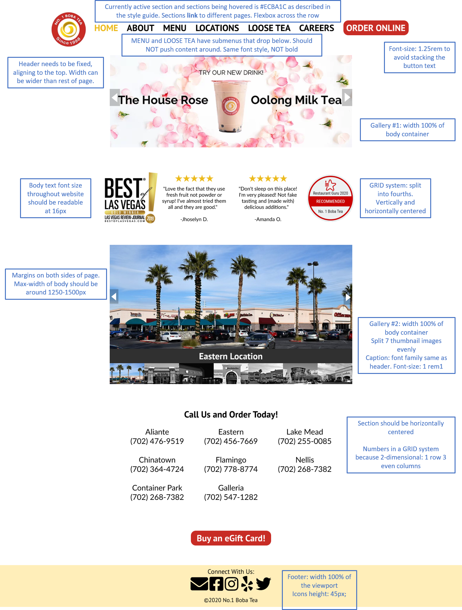

Responsive Redesign
Part 1: Identifying Usability Problems
This project focuses on redesigning the website for No. 1 Boba Tea, a local boba
tea store in Las Vegas. When first visiting their website, I noticed that most of
the parts were functional and that they are able to get their points across in
presenting their menu, locations, and providing background about the store.
However, upon further analysis, I was able to find a few areas for improvement,
which mainly focus on making the site
more user friendly, making elements more intuitive, and simplifying
the structure so that information is more readable and
more logically grouped.
A few problems are described in more detail below and annotated in the screenshot:
-
(1) the menu for different sections is below a lot of other information, and you
have to scroll up to reach the primary navigation bar
- (1) tons of menu options makes it overwhelming and cluttered
-
(1) font size doesn’t really make sense: menu options are really tiny in
comparison to the other site content
-
(2) the colors of the buttons seem random and don’t have special meaning (green,
white, red [may have unintended connotations towards the Italian flag], and blue
on hover)
-
(3) large section with no obvious and significant meaning (“the art of tea”)
-
(4) gallery on first glance isn’t intuitive about switching images (no buttons
or arrows)
-
hardly any obvious color contrast between currently active image and other
images
-
(5) phone numbers and locations are all in one large clump so it’s hard to tell
which phone number is with which location
-
(5) “order now” is bolded, which suggests a clickable link that’s not there
-
grouping and hierarchy doesn’t really make sense in a few places
-
(6) map icon links to one specific location that doesn’t match the main
address on the webpage and is grouped with the other social media icons
-
(6) two contact options are listed on the left, which overlaps with the
social media links on the bottom
-
(7) commendations and awards are on opposite ends of the page (one on the
top and one on the bottom)
When analyzing the site’s accessibility, I found that in terms of visual styles,
there weren’t any glaring concerns except for the fact that the contrast of the
black text on red was pretty low. With the WebAIM WAVE tool, I noticed that
although the website includes alt tags for their images, they aren’t always
descriptive (ex: “Resized 4 OTS.jpg” for their logo). When using the screen
reader, I found that there were 5 different elements to go through before reaching
their main navigation and in the navigation bar, between “menu” and “pick and brew
tea”, there were 9 sub elements of “menu” that we had to navigate through. As
such, in my redesign, I want to prioritize being able to navigate directly to the
main navigation bar and making descriptions more clear.
Part 2: Visual Redesign
Lo-fi Wireframes
Based on the usability problems identified in part 1, I first created some mockups
for my redesign. I tried to focus on keeping as many of the original elements as
possible while making the interface more intuitive with better hierarchy and less
clutter. In these lo-fi wireframes of 3 different devices, I’ve annotated the
sections that have been re-designed with the numbers associated with their
identified problems in part 1.
Below is some more detail about my decisions and how they address the previously
identified problems:
-
In order to increase efficiency and usability, I moved the site’s navigation bar
to the top. This allows a
more consistent theme for the rest of the pages in the website as well
because the navigation bar will always be at the top and there won’t be any
other extra information above it. This mockup also keeps the navigation bar
fixed at the top which makes it easy to access while browsing the site. I
also renamed some of the sections and cut down the overall number, which makes
the point of each section more clear and increases readability. In the mobile
version, the menu is collapsed into a clickable button to prevent clutter and
increase space efficiency.
-
In the original website, the different colored buttons for ordering feels a bit
overwhelming and has unintended connotations. In my wireframe, they were
combined into a single “Order Online” button in the upper right, which makes the
interface more standard and more learnable while still drawing attention to the
option. Moving the order button here should also increase visual contrast and
draw attention without using distracting colors. In the mobile version, this
feature is inside the menu.
-
While it was difficult to discern the meaning of this section in the original
website, I decided to keep it and combine it with the “new drink” image to
create a gallery. This creates a more centralized spot for announcements and
banner advertisements. It’ll also allow the website to stay more consistent even
if the images and content change, increasing memorability.
-
In the original website, it’s difficult to tell what the images in the gallery
are and how to navigate the gallery. In the redesign, I added arrows to promote
more intuitive controls. The arrows are added on top of the image to minimize
unnecessary white space, especially for the mobile and tablet versions.
-
The original website lists all the locations and phone numbers in one long
column, where the phone number is followed by the location. I grouped together
each location with its phone number and added a bit of extra whitespace in
between each location to create a grid that encourages better readability and
keeps this section distinct from other information. I also took out the bold
styling in “Call Us to Order” in order to prevent misinterpretations of a
clickable link.
-
Here, I ended up taking out the maps icon because it contained information
repeated in the “Locations” section of the webpage. and didn’t want to direct
people to one specific location. The icons were also changed to reflect a more
updated and well-maintained interface. I also moved the Facebook and email
sections here to group similar elements and create a hierarchy that emphasizes
calling and ordering over emailing and social media.
-
Finally, since I took out the “Reviews” section from the navigation bar, I
combined it with the two comemndations and awards that the shop wanted to
display. This way, similar information is grouped, which also makes it easier to
process.
Hifi Prototyping

Visual Style Guide
Responsive Redesign
When creating the responsive redesign of the boba store's website, I was really
astonished by how much easier it was to use Bootstrap while making elements
responsive. One thing I found out from trying navigate the site with the "tab" key
to emulate screen readers was that it would include parts of my carousels like the
controls and the indicators. Furthermore, in general, it didn't really seem like
carousels were that friendly towards accessibility though it visually looks pretty
good. When increasing font size, there's a slight margin where the sections of the
nav bar become too big and causes the "Order Online" button to become two lines,
but luckily for most other cases it collapses into the hamburger menu. Between my
final product and my hi-fi prototypes, I found it difficult to customize some of
the active effects that Bootstrap had so I ended up leaving them as is. Also, I
realized that I designed my tablet protoype on a slighly bigger iPad Pro, instead
of a regular tablet size, but luckily this wasn't too big of a problem because the
menu could just be collapsed into the hamburger menu.
Check it out here!